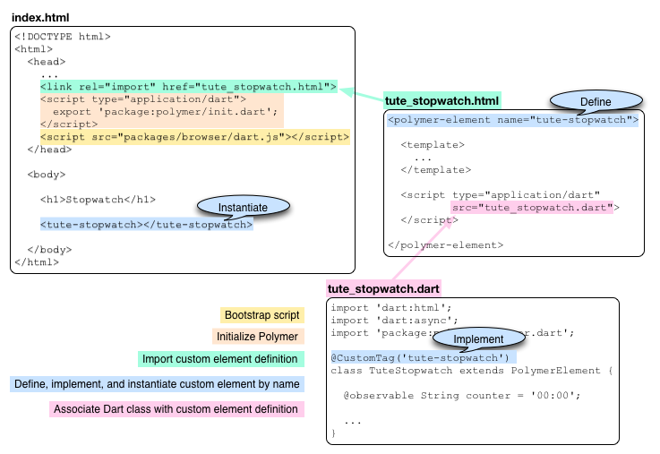
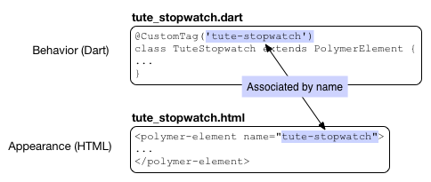

内容摘要
- Polymer.dart is the next evolution of Web UI.
- Everything in Polymer.dart is an element.
- Custom elements provide semantically meaningful encapsulation.
- Use Polymer.dart to build custom elements.
- Bind Dart data to HTML elements.
- Declaratively bind event handlers to elements.

Define a Custom Element
Create a custom HTML element using Polymer
A custom element is an HTML element you can define yourself, encapsulating appearance and/or behavior within semantically meaningful HTML.
- An example
- Installing Polymer.dart
- Including Polymer.dart in your application
- Instantiating a custom element
- Defining a custom element
- Providing a template for the custom element
- Providing a script for the custom element
- Overiding life-cycle methods
- Using data binding
- Setting up event handlers declaratively
- Styling a custom element
- Other resources
- What next?
An example
In the example running below, the LemonChiffon area outlined in black is a custom element implemented using Polymer.
Try it! Start and stop the stopwatch. Reset the stopwatch to 00:00 using the Reset button.
To place this custom element on an HTML page, import the file with the custom element definition and use the name of the element as an HTML tag:
<link rel="import" href="tute_stopwatch.html"> ... <tute-stopwatch></tute-stopwatch>
The counting text, the three buttons along with their actions, and the style are all contained within the custom element. The definition of the custom element encapsulates and hides the implementation details, which as the user of the element, you care nothing about.
When you use developer tools to inspect the element, you see just the custom element’s begin and end tags.
With custom elements, you can easily create new kinds of elements that have semantically meaningful tags and that are easy to share, reuse, and read.
Overview of the example files
Three main source files implement the Stopwatch example:
- index.html
- The primary HTML file for the app. Includes the Polymer bootstrap script and instantiates the custom element.
- tute_stopwatch.html
- The HTML code that defines the custom element.
- tute_stopwatch.dart
- The Dart class that implements the custom element.
The following diagram shows the structure of the example app and its use of custom elements.

Installing Polymer.dart
To use the features provided by Polymer.dart, you need to install the Polymer package. If you are unfamiliar with installing packages, refer to Install Shared Packages, which describes the process in detail.
In brief, to install the Polymer package:
-
In the application’s
pubspec.yamlfile, add the package to the list of dependencies by adding the package name,polymer, to the list. YAML is whitespace-sensitive, so take care to indent the package name as shown: -
Run
pub install, which recursively installs the polymer.dart package and all the packages that it depends on. If you are using Dart Editor, when you save pubspec.yaml the editor automatically runspub installfor you. If you are using command line tools, you can run it with the commandpub install.
Including Polymer.dart in your application
To use Polymer.dart features such as custom elements, you need to include Polymer in both the HTML side and the Dart side of your app.
-
In the primary HTML file for your app, import
package:polymer/init.dartwithin a <script> tag in the <head> section. This script contains themain()function for the app and initializes Polymer.
-
In the primary HTML file for your app, include the
packages/browser/dart.jsbootstrap script in the <head> section. -
In your Dart code, import the Polymer library:

Instantiating a custom element
To create an instance of a custom element,
use the name of the custom element just as you would any normal HTML tag.
In this example, the tag name is tute-stopwatch.

Using best practices,
the custom element definition is in a separate file.
Use link [rel="import"] to import the HTML definition file as shown.
Defining a custom element
The definition for the <tute-stopwatch> element is in tute_stopwatch.html. A custom element definition should be in its own source file so that it can be included by other files. An HTML file that contains the definition for a custom element does not need <html>, <head>, or <body> tags.
To define a custom element, use the <polymer-element> tag and provide a name.
<polymer-element name="tute-stopwatch"> ... </polymer-element>
A custom element name must have at least one hyphen (-).
We advise using an identifiable prefix to
avoid naming conflicts with elements shared by others
and to help identify the project from which the element originates.
For example, for tutorial custom elements, we use the prefix tute.
Within the <polymer-element> tag, you can provide a template (appearance) and a script (behavior). UI widgets, like our Stopwatch example, typically have both a template and a script, but neither is required. A custom element with a script and no template is purely functional. A custom element with a template and no script is purely visual.
<polymer-element name="tute-stopwatch">
<template>
...
</template>
<script type="application/dart" src="tute_stopwatch.dart">
</script>
</polymer-element>
- <template>
- Describes the custom element's structure—its user interface. The template comprises any valid HTML code within the <template> tag. When the custom element is instantiated, the instance is created from the template. The template can include CSS styles within a <style> tag.
- <script>
-
Specifies a Dart script. For custom elements, the Dart script is a Dart class that implements the behavior of the element. The class typically overrides some life-cycle methods and provides event handlers that join the UI with its programmatic behavior. In this example, the script is in tute_stopwatch.dart.
Providing a template for the custom element
Here’s the template code for the tute-stopwatch element:

The tute-stopwatch template uses a <style> tag, which is optional. These styles are scoped; they affect only the appearance of the custom element and the elements it contains. More about scoped CSS in Styling a custom element.
The rest of the code within the <template> tag is normal HTML, with two exceptions:
{{counter}} |
Uses a Polymer syntax to bind Dart data to the HTML page. The double curly braces are commonly known as a “double mustache”. |
on-click |
Uses Polymer declarative event mapping, which allows you to set up event handlers for a UI element. on-click sets up an event handler for mouse clicks. Polymer has mappings for other event types, such as on-input for changes to text fields. |
Let’s take a look at the structure of the Dart code before we get into the details of data binding, event handlers, and scoped CSS.
Providing a script for the custom element
On the Dart side, a class implements the behavior of the custom element.
You associate the Dart class with the custom element using the @CustomTag
annotation and the name of the custom element.

This diagram gives an overview of the TuteStopwatch class:

Any Dart class that backs a Polymer element must subclass PolymerElement.
The class can respond to life-cycle milestones
by overriding life-cycle methods.
For example, the TuteStopwatch class overrides the enteredView()
method—which is called when the element is inserted
into the DOM—to initialize the app.
The start() method is an event handler for the Start button.
The event handler is declaratively connected to the button.
Refer to Setting up event handlers declaratively to see how.
Overriding life-cycle methods
A custom element has four life-cycle methods that it can override:
created() |
Called when an instance of a custom element is created. |
enteredView() |
Called when an instance of a custom element is inserted into the DOM. |
leftView() |
Called when an instance of a custom element is removed from the DOM. |
attributeChanged() |
Called when an attribute, such as class, of an instance of the custom element is added, changed, or removed. |
You can override any of these life-cycle methods. The overriding method must call the super class method first.
The Stopwatch app overrides the enteredView() method because it
needs a reference to each of the three buttons
so that it can enable and disable them.
When a tute-stopwatch custom element is inserted into the DOM
the buttons have been created, so the references to them
will be available when the enteredView() method is called.
void enteredView() {
super.enteredView();
startButton = $['startButton'];
stopButton = $['stopButton'];
resetButton = $['resetButton'];
stopButton.disabled = true;
resetButton.disabled = true;
}
The code uses automatic node finding, a Polymer feature,
to get a reference to each button.
Every node in a custom element that is tagged with an id attribute
can be referenced by its ID using the syntax: $['ID'].
Using data binding
In the HTML definition of a custom element,
use double curly brackets to embed Dart data into the webpage.
In your Dart code, use the @observable annotation
to mark the embedded data.
Here, the data is a string called counter.

The tute-stopwatch element uses a periodic
Timer
to fire an event every second.
When the Timer fires, it calls the updateTimer() method,
which modifies the counter string.
Polymer takes care of updating the HTML page with the new string.
This type of binding is called one-way data binding because the data can change only on the Dart side. Polymer also supports two-way data binding. In two-way data binding, when data changes on the HTML side—for example with an input element—the value in the Dart code changes to match. For more information about two-way binding, plus examples of using it with a variety of HTML5 widgets, check out the Forms tutorial section Two-way data binding using Polymer.
You can use expressions within the double curly brackets. Polymer expressions provide the default syntax. Examples of allowable expressions include:
{{myObject.aProperty}} |
Property access. |
{{!empty}} |
Operators, like the logical not operator. |
{{myList[3]}} |
List indexing. |
{{myFilter()}} |
Data filtering. |
Setting up event handlers declaratively
This example has three buttons, each with an event handler that is written in Dart, but attached to the button declaratively from HTML.

In HTML, use the on-click attribute
to attach a mouse click handler to an HTML element.
The value of the attribute must be the name of a method
in the class that implements the custom element.
When the user clicks the button, the specified method is called
with three parameters:
-
An Event that contains information about the event, such as its type and when it occurred.
-
The detail object can provide additional, event-specific information.
-
The Node that fired the event—the Start button in this case.
You can attach event handlers for other kinds of events.
For example, you can use on-input to handle events
for input text elements when the text changes.
Refer to Declarative event mapping for further details.
Styling a custom element
You can optionally include CSS styles for your custom element that apply only to the contents of the custom element.

The @host rule allows you to target and style an element internally,
from within its definition.
The :scope pseudo-class refers to the custom element itself.
The only selectors that work within @host are those contained
in the host element itself.
So you don’t need to worry about naming conflicts on the page.
Any CSS selectors within the template need to be unique only within the template.
For further details about styling custom elements, refer to A Guide to Styling Elements
Other resources
Use these other resources to learn more about Polymer:
-
The Polymer.dart homepage provides information specific to the Dart port of the Polymer project.
-
The Polymer project website polymer-project.org contains information about the Polymer project as a whole.
What next?
Two-way data binding with Polymer in the tutorial about forms shows how to use two-way data binding with various types of input elements such as text fields, color pickers, and so on.
Check out these other tutorial examples that use Polymer:
- its_all_about_you
- slambook
- count_down
The next tutorial, Fetch Data Dynamically, shows you how to fetch data and use JSON to encode and decode that data.